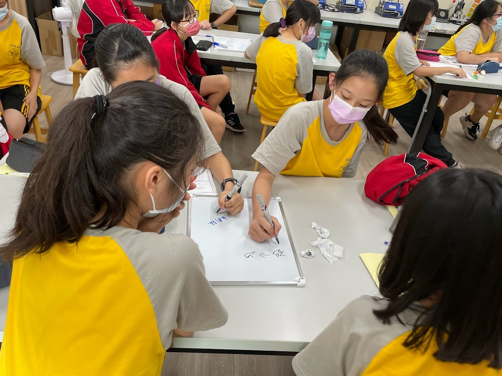
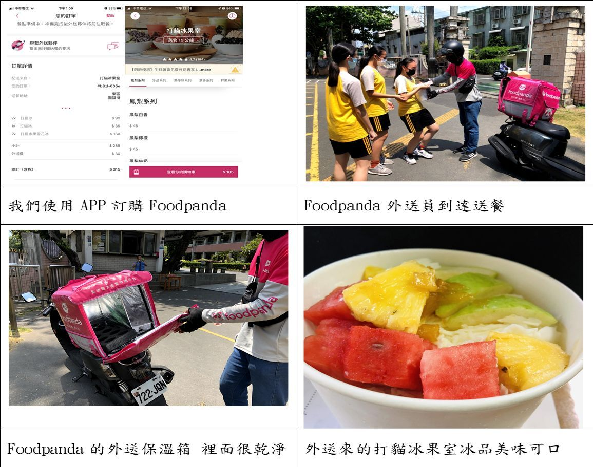
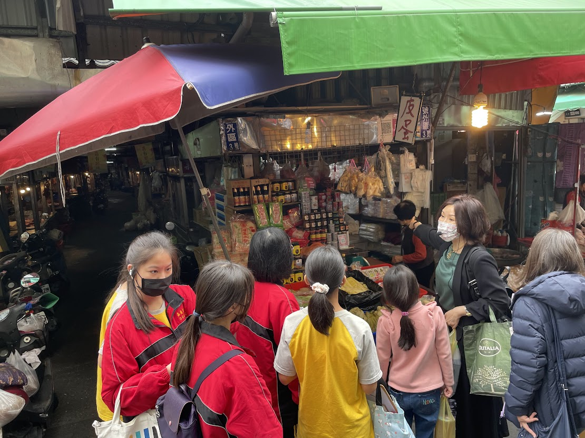
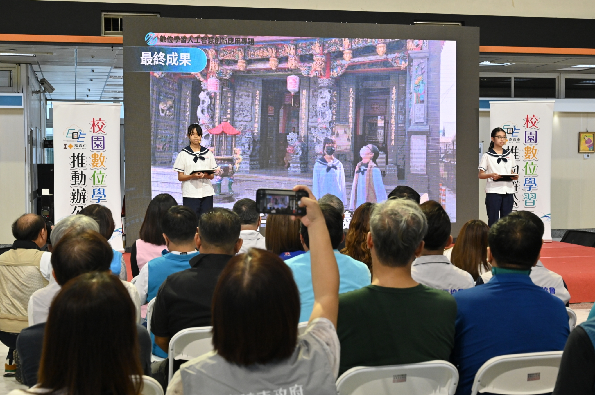
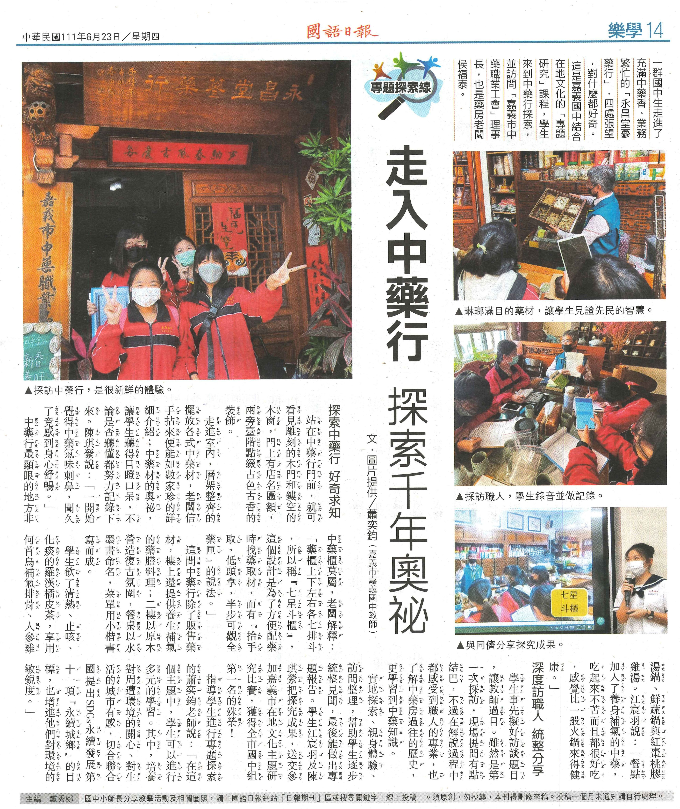
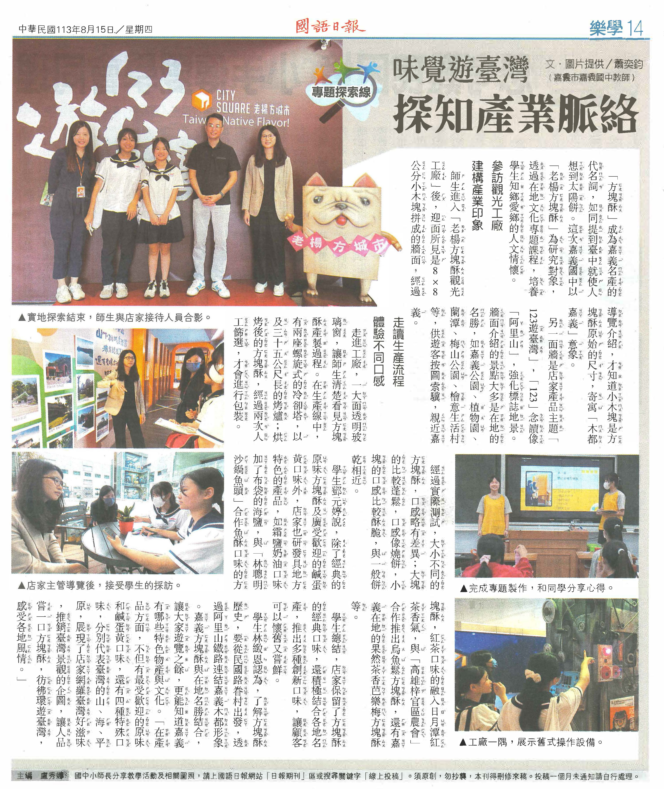
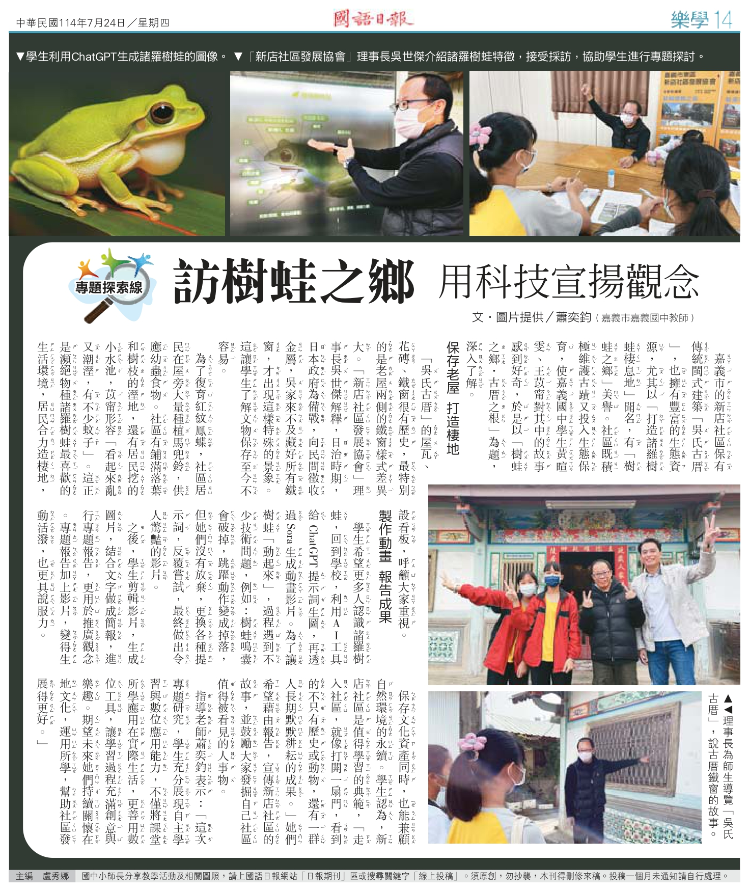
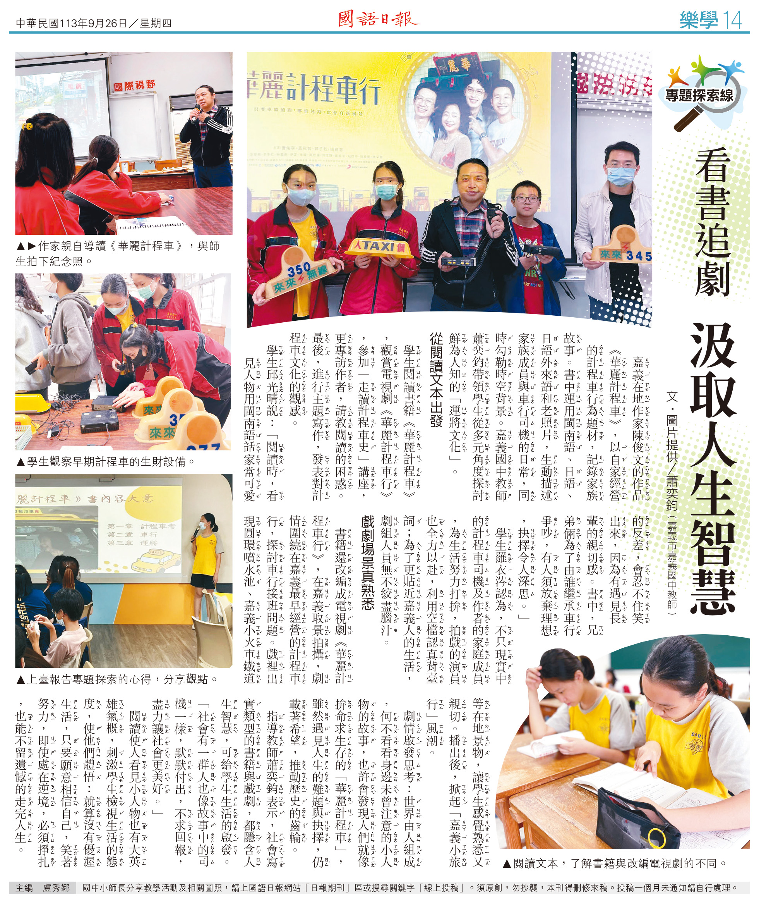
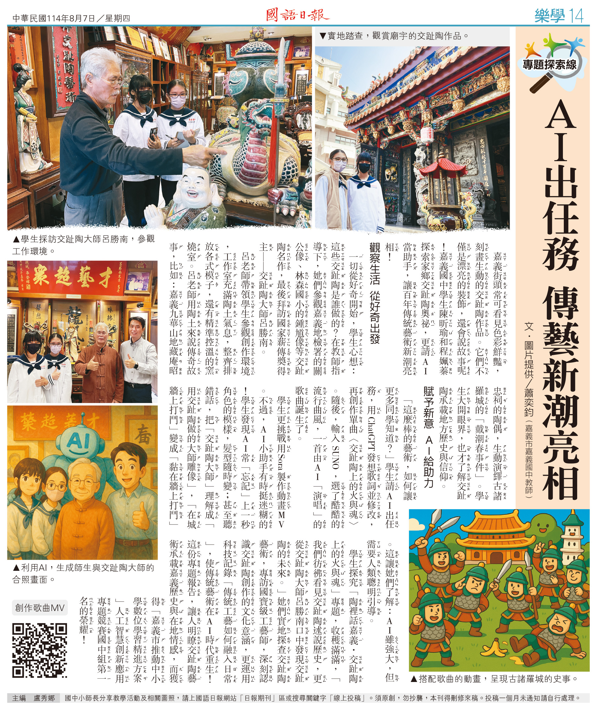
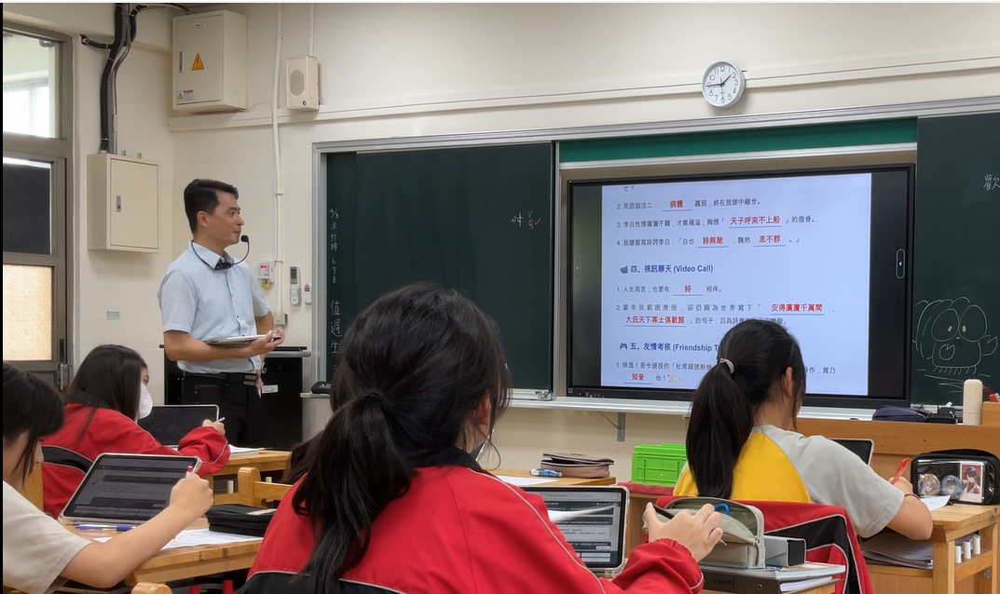

自我介紹
✅講師：奕鈞老師
✅【個人簡介】 不務正業的國中國文教師，致力於推廣數位學習。擅長捕捉教育現場的「真實痛點」，利用 Gemini、Google Apps Script (GAS)與 Canvas技術，將行政繁瑣與教學需求轉化為高效的數位工具。主張「想像力即程式碼」，利用Vibe Coding帶領師生即使不精通程式語法，也能用 AI 打造專屬的教學神器。
一、教學過程與方法：從零到一的專題實作
- 說明專題格式：建立清晰框架，讓學生了解專題研究的基本架構與預期產出。
- 典範學習與九宮格記錄：引導學生閱讀學長姊報告，萃取成功經驗。
- 學生分組與任務分工：引導小組成員分配角色與職責。
- 尋找題目與發想：填寫主題創意構想圖。
- 研究實踐四部曲：查詢資料 ➔ 製作問卷 ➔ 編寫投影片 ➔ 上台發表。

二、第一階段：從「心」出發
學生興趣導向專題：將生活中的「玩樂與好奇」轉化為嚴謹的探究過程。
- 外送平臺實測：觀察保溫、衛生並訪談外送員。
- 國中生 App 偏好調查：IG、YouTube 與 FB 的使用迷思。
- 串流媒體大數據：Netflix 崛起的原因與演算法探討。

三、第二階段：走入社區
在地文化探究：培養學生對本土文化的認同與社會責任感。
- 疫情下的文化路：與攤商及市府主管訪談，看見疫情下的兩難。
- 林聰明沙鍋魚頭：傳統餐飲的轉型陣痛與二代經營的創新理念。
- 奧利塔高科技倉儲：從傳統市場賣豬油轉型為現代化自動倉儲的震撼體驗。
- 樂善好施的財神爺：深入探索嘉義文財殿的歷史與信仰意涵，並了解其推動公益與台語文化的努力。
- 承載著希望和歷史的華麗計程車：《華麗計程車》描寫嘉義在地計程車家庭的真實故事，展現臺灣計程車文化與平凡運將的動人生活。
- 123阿里山，方塊酥遊台灣：探索老楊方塊酥的創業歷程與品牌策略，以及其如何以創新口味與嘉義文化結合。

四、第三階段：擁抱未來
數位學習與 AI 應用：因應 AI 時代，專題研究的全面數位轉型。
- 生成式 AI 實戰：使用 Sora 生成諸羅樹蛙影片、Suno 製作交趾陶 MV。
- 跨域資訊整合：AI 選書機器人、日治戶籍謄本的互動網頁大挑戰。
- AI 輔助工具導入：利用 LLM 自動生成長者訪談的逐字摘要。

五、投稿作品
📄 翻轉教育投稿
從運將故事中汲取人生智慧
📄 翻轉教育投稿
素養導向學習

.jpg)






六、反思與展望：教學現場的真實回饋
- 生生用平板的真實數據：學生喜愛數位學習，但為何老師在課堂上仍偏好傳統教具？（備課成本高、行政耗時、進度壓力）。
- AI 時代的教師角色：從知識的傳授者，轉變為協助學生運用 AI 解決問題的引導者。

七、歷年得獎作品
競賽專題成果時間軸：點擊專題名稱展開，可查看專題摘要與詳細得獎榮譽。
109學年度
第一名
新冠肺炎下的文化路夜市
🏆 嘉義市在地文化主題研究比賽第一名
專題摘要：本專題以新冠肺炎疫情衝擊下的文化路夜市為研究對象，透過資料蒐集、問卷調查與街頭訪談，探討疫情對夜市商家與民眾消費行為的影響，並走訪嘉義市政府了解振興與紓困措施，提出對夜市永續發展的觀察與建議，呈現地方經濟與防疫之間的平衡挑戰。
110學年度
第一名
林聰明砂鍋魚頭與地方創生
🏆 嘉義市在地文化主題研究比賽第一名
專題摘要：本專題透過實地訪談與美食體驗，深入探索林聰明沙鍋魚頭從傳統小吃轉型為嘉義文化代表的歷程，聚焦其品牌經營理念、文化傳承及地方創生實踐，展現一家老店如何結合歷史、人情與創新，成為嘉義飲食文化的重要象徵。
110學年度
第二名
愛木成痴的愛木村
🏆 嘉義市在地文化主題研究比賽第二名
專題摘要：本專題透過實地訪談與工廠參觀，探索嘉義愛木村從傳統檜木製材廠轉型為觀光工廠的歷程，並深入了解台灣林業發展、木作工藝與親子互動體驗設計，展現文化保存、教育推廣與產業創新的結合，喚起對木頭與自然的珍惜之情。
111學年度
第一名
用一頓飯的時間-走入千年的中藥奧秘
🏆 嘉義市在地文化主題研究比賽第一名
專題摘要：本研究透過參訪嘉義市的永昌堂蔘藥行與心宜草堂，實地體驗中藥文化與藥膳餐飲的結合，深入探討傳統中藥的知識與藥材應用，並了解其如何因應時代創新轉型，成功結合在地文化與現代餐飲，展現中藥行的永續經營智慧。
111學年度
第三名
從嘉義到義大利 從豬油到橄欖油
🏆 嘉義市在地文化主題研究比賽第三名
專題摘要：本專題透過訪談與實地參訪，探究協憶公司如何從嘉義傳統豬油商轉型為義大利奧莉塔橄欖油的台灣總代理，並深入了解品牌建立、自動化倉儲與品油教育推廣的歷程，展現地方企業結合傳統與創新、走向國際的奮鬥故事。
112學年度
第二名
以阿里山為名的南馨食品行
🏆 嘉義市在地文化主題研究比賽第二名
專題摘要：本專題探訪創立於1953年的南馨食品行，深入了解其從戰後草創、傳承日式糕點技藝到註冊「阿里山」商標的歷程，並透過實地訪談與製作體驗，探索其如何結合在地文化、堅持現做精神與食品衛生，打造嘉義在地特色品牌，傳承台灣傳統糕餅文化。
112學年度
佳作
樂善好施的財神爺
🏆 嘉義市在地文化主題研究比賽佳作
專題摘要：本專題透過實地參訪與訪談，深入探索嘉義文財殿的歷史、主祀神比干的由來與信仰意涵，並了解其推動公益與台語文化的努力。從宗教信仰、慈善事業到在地語言傳承，文財殿展現了地方廟宇兼具精神寄託與社會關懷的重要角色。
113學年度
第一名 / 第三名
123阿里山 嘉義方塊酥遊台灣
🏆 嘉義市人工智慧創新應用專題競賽徵件計畫第一名
🏆 嘉義市在地文化主題研究比賽第三名
🏆 嘉義市在地文化主題研究比賽第三名
專題摘要：本專題透過問卷調查、實地參訪老楊方城市觀光工廠與專訪品牌主管，深入了解老楊方塊酥的創業歷程、產品特色、品牌策略及地方連結，並探討其如何以創新口味與嘉義文化結合，成為深具代表性的台灣伴手禮及嘉義名產之一。
113學年度
第一名
承載著希望和歷史的華麗計程車
🏆 嘉義市在地文化主題研究比賽第一名
專題摘要：《華麗計程車》描寫嘉義在地計程車家庭的真實故事，由作家陳俊文書寫並改編為影視劇，展現臺灣計程車文化與平凡運將的動人生活。學生透過閱讀、觀劇與講座參與，深入了解嘉義的歷史、人情與社會變遷，體會在地文化與平凡人生的可貴與光芒。
114學年度
第一名
陶裡話嘉義：交趾陶上的火與魂
🏆 嘉義市人工智慧創新應用專題競賽徵件計畫第一名
專題摘要：實地探查交趾陶藝術的發展，並專訪國寶級工藝師呂勝南老師，深入了解交趾陶的創作歷程與文化意涵。
114學年度
第三名
樹蛙之鄉．古厝之根：走入新店社區的生態與文化之旅
🏆 嘉義市人工智慧創新應用專題競賽徵件計畫第三名
專題摘要：透過訪談社區理事長吳世傑老師與實地走訪，聚焦於社區對諸羅樹蛙的棲地營造與文化資產吳氏古厝的保存，探究社區如何在地發展、生態保育與文化傳承之間取得平衡。
115學年度
第三名
當粉筆遇上觸控螢幕—探討嘉義國中師生數位學習意願之研究
🏆 嘉義市人工智慧創新應用專題競賽徵件計畫第三名
專題摘要：這份研究主要透過問卷調查和訪問，去了解學校裡「老師想不想用數位工具上課」以及「學生喜不喜歡用平板或電腦學習」的真實想法。此外，我們也在研究中加入了學生自己動手設計「AI 小老師」的實作經驗。希望這份研究的結果能讓大家了解，在 AI 時代中，其實不需要完全捨棄傳統的黑板 and 紙本，而是要找出數位科技與傳統教學之間最好的搭配方式，讓未來的學習變得更方便、也更有趣 。
115學年度
佳作
要讀又要玩？探討數位遊戲化對國中生閱讀動機之影響
🏆 嘉義市人工智慧創新應用專題競賽徵件計畫佳作
專題摘要：本研究探討如何透過「數位遊戲化」打破傳統閱讀與遊戲的界線。進一步利用最新流行的 VibeCoding 技術，透過 Google Gemini 開發出「AI 智能選書機器人」，親自測試科技引導閱讀的實際成效。研究引用自決理論發現，數位系統能有效滿足學生的「勝任感」與「自主感」。問卷結果證實，這種「邊讀邊玩」的模式能激發腦內啡分泌，成功將競爭壓力轉化為內在動機，顯著提升國中生的閱讀參與度、行政效率與學習成就感。
115學年度
佳作
時光偵探的數位解密：結合訪談與數位工具探究日治生活
🏆 嘉義市人工智慧創新應用專題競賽徵件計畫佳作
專題摘要：本作品「時光偵探的數位解密」結合口述歷史與數位科技，旨在重現日治時期嘉義的家族記憶。透過訪談 90 歲耆老吳伯先生，詳實記錄其家族在現今吳鳳北路經營醬油產業的富裕往事，以及二戰末期因美軍空襲全家疏散至阿里山避難的生命歷程。本研究運用戶籍謄本互動程式解碼「種別」與「纏足」等歷史標記，並結合生成式 AI科技，有效達成官方文獻與個人敘事的互證，賦予生澀史料數位新生命。